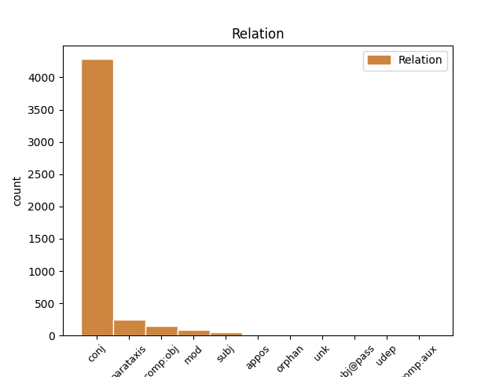
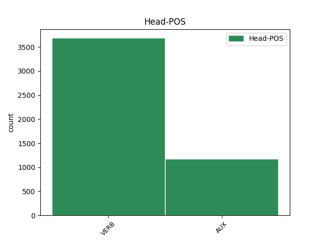

Distribution of features within this leaf


Agreement Rules sorted by frequency.
- When the dependent token is the conjunct(conj) of the head token,
1 Naproti _ _ _ _ 0 _ _ _
2 tomu _ _ _ _ 0 _ _ _
3 prvky _ _ _ _ 0 _ _ _
4 , _ _ _ _ 0 _ _ _
5 kterým _ _ _ _ 0 _ _ _
6 chybí chybět VERB VB-S---3P-AA--- Aspect=Imp|Mood=Ind|Number=Sing|Person=3|Polarity=Pos|Tense=Pres|VerbForm=Fin|Voice=Act 0 _ _ _
7 jeden _ _ _ _ 0 _ _ _
8 obvodový _ _ _ _ 0 _ _ _
9 elektron _ _ _ _ 0 _ _ _
10 do _ _ _ _ 0 _ _ _
11 úplného _ _ _ _ 0 _ _ _
12 obsazení _ _ _ _ 0 _ _ _
13 krajní _ _ _ _ 0 _ _ _
14 slupky _ _ _ _ 0 _ _ _
15 a _ _ _ _ 0 _ _ _
16 tvoří tvořit VERB VB-P---3P-AA--- Aspect=Imp|Mood=Ind|Number=Plur|Person=3|Polarity=Pos|Tense=Pres|VerbForm=Fin|Voice=Act 6 conj _ _
17 jednomocné _ _ _ _ 0 _ _ _
18 záporné _ _ _ _ 0 _ _ _
19 ionty _ _ _ _ 0 _ _ _
20 a _ _ _ _ 0 _ _ _
21 vznikající _ _ _ _ 0 _ _ _
22 připoutáním _ _ _ _ 0 _ _ _
23 dalšího _ _ _ _ 0 _ _ _
24 elektronu _ _ _ _ 0 _ _ _
25 . _ _ _ _ 0 _ _ _
1 První _ _ _ _ 0 _ _ _
2 vodorovná _ _ _ _ 0 _ _ _
3 dokazuje dokazovat VERB VB-S---3P-AA--- Aspect=Imp|Mood=Ind|Number=Sing|Person=3|Polarity=Pos|Tense=Pres|VerbForm=Fin|Voice=Act 0 _ _ _
4 , _ _ _ _ 0 _ _ _
5 v _ _ _ _ 0 _ _ _
6 níž _ _ _ _ 0 _ _ _
7 je být VERB VB-S---3P-AA--- Mood=Ind|Number=Sing|Person=3|Polarity=Pos|Tense=Pres|VerbForm=Fin|Voice=Act 3 parataxis _ _
8 pouze _ _ _ _ 0 _ _ _
9 vodík _ _ _ _ 0 _ _ _
10 a _ _ _ _ 0 _ _ _
11 helium _ _ _ _ 0 _ _ _
12 , _ _ _ _ 0 _ _ _
13 je _ _ _ _ 0 _ _ _
14 rudimentární _ _ _ _ 0 _ _ _
15 perioda _ _ _ _ 0 _ _ _
16 , _ _ _ _ 0 _ _ _
17 rudimentum _ _ _ _ 0 _ _ _
18 , _ _ _ _ 0 _ _ _
19 zákrsek _ _ _ _ 0 _ _ _
20 , _ _ _ _ 0 _ _ _
21 nedokonalý _ _ _ _ 0 _ _ _
22 počátek _ _ _ _ 0 _ _ _
23 . _ _ _ _ 0 _ _ _
1 Necháme _ _ _ _ 0 _ _ _
2 - _ _ _ _ 0 _ _ _
3 li _ _ _ _ 0 _ _ _
4 stranou _ _ _ _ 0 _ _ _
5 některé _ _ _ _ 0 _ _ _
6 praktické _ _ _ _ 0 _ _ _
7 aplikace _ _ _ _ 0 _ _ _
8 modelování _ _ _ _ 0 _ _ _
9 složitých _ _ _ _ 0 _ _ _
10 potenciálů _ _ _ _ 0 _ _ _
11 těles _ _ _ _ 0 _ _ _
12 , _ _ _ _ 0 _ _ _
13 ukazují ukazovat VERB VB-P---3P-AA--- Aspect=Imp|Mood=Ind|Number=Plur|Person=3|Polarity=Pos|Tense=Pres|VerbForm=Fin|Voice=Act 0 _ _ _
14 nám _ _ _ _ 0 _ _ _
15 práce _ _ _ _ 0 _ _ _
16 tohoto _ _ _ _ 0 _ _ _
17 druhu _ _ _ _ 0 _ _ _
18 , _ _ _ _ 0 _ _ _
19 které _ _ _ _ 0 _ _ _
20 závěry _ _ _ _ 0 _ _ _
21 nebeské _ _ _ _ 0 _ _ _
22 mechaniky _ _ _ _ 0 _ _ _
23 jsou být AUX VB-P---3P-AA--- Mood=Ind|Number=Plur|Person=3|Polarity=Pos|Tense=Pres|VerbForm=Fin|Voice=Act 13 comp:obj _ _
24 důsledkem _ _ _ _ 0 _ _ _
25 speciálních _ _ _ _ 0 _ _ _
26 předpokladů _ _ _ _ 0 _ _ _
27 a _ _ _ _ 0 _ _ _
28 které _ _ _ _ 0 _ _ _
29 mají _ _ _ _ 0 _ _ _
30 obecnější _ _ _ _ 0 _ _ _
31 platnost _ _ _ _ 0 _ _ _
32 . _ _ _ _ 0 _ _ _
1 I _ _ _ _ 0 _ _ _
2 když _ _ _ _ 0 _ _ _
3 obecně _ _ _ _ 0 _ _ _
4 nelze _ _ _ _ 0 _ _ _
5 uspokojivě _ _ _ _ 0 _ _ _
6 analyticky _ _ _ _ 0 _ _ _
7 řešit _ _ _ _ 0 _ _ _
8 ani _ _ _ _ 0 _ _ _
9 problém _ _ _ _ 0 _ _ _
10 tří _ _ _ _ 0 _ _ _
11 těles _ _ _ _ 0 _ _ _
12 , _ _ _ _ 0 _ _ _
13 přece _ _ _ _ 0 _ _ _
14 každoročně _ _ _ _ 0 _ _ _
15 vychází vycházet VERB VB-S---3P-AA--- Aspect=Imp|Mood=Ind|Number=Sing|Person=3|Polarity=Pos|Tense=Pres|VerbForm=Fin|Voice=Act 0 _ _ _
16 řada _ _ _ _ 0 _ _ _
17 prací _ _ _ _ 0 _ _ _
18 o _ _ _ _ 0 _ _ _
19 problému _ _ _ _ 0 _ _ _
20 mnoha _ _ _ _ 0 _ _ _
21 těles _ _ _ _ 0 _ _ _
22 , _ _ _ _ 0 _ _ _
23 ať _ _ _ _ 0 _ _ _
24 už _ _ _ _ 0 _ _ _
25 jde jít VERB VB-S---3P-AA--- Mood=Ind|Number=Sing|Person=3|Polarity=Pos|Tense=Pres|VerbForm=Fin|Voice=Act 15 mod _ _
26 o _ _ _ _ 0 _ _ _
27 analytická _ _ _ _ 0 _ _ _
28 řešení _ _ _ _ 0 _ _ _
29 speciálních _ _ _ _ 0 _ _ _
30 případů _ _ _ _ 0 _ _ _
31 nebo _ _ _ _ 0 _ _ _
32 o _ _ _ _ 0 _ _ _
33 numerická _ _ _ _ 0 _ _ _
34 řešení _ _ _ _ 0 _ _ _
35 . _ _ _ _ 0 _ _ _
1 V _ _ _ _ 0 _ _ _
2 seznamu _ _ _ _ 0 _ _ _
3 rostlin _ _ _ _ 0 _ _ _
4 je být AUX VB-S---3P-AA--- Mood=Ind|Number=Sing|Person=3|Polarity=Pos|Tense=Pres|VerbForm=Fin|Voice=Act 0 _ _ _
5 u _ _ _ _ 0 _ _ _
6 každé _ _ _ _ 0 _ _ _
7 rostliny _ _ _ _ 0 _ _ _
8 uvedeno _ _ _ _ 0 _ _ _
9 , _ _ _ _ 0 _ _ _
10 jaký _ _ _ _ 0 _ _ _
11 si _ _ _ _ 0 _ _ _
12 činí činit VERB VB-S---3P-AA--- Aspect=Imp|Mood=Ind|Number=Sing|Person=3|Polarity=Pos|Tense=Pres|VerbForm=Fin|Voice=Act 4 subj _ _
13 nárok _ _ _ _ 0 _ _ _
14 na _ _ _ _ 0 _ _ _
15 složení _ _ _ _ 0 _ _ _
16 substrátu _ _ _ _ 0 _ _ _
17 . _ _ _ _ 0 _ _ _
1 Částice _ _ _ _ 0 _ _ _
2 * _ _ _ _ 0 _ _ _
3 může _ _ _ _ 0 _ _ _
4 proletět _ _ _ _ 0 _ _ _
5 přímočaře _ _ _ _ 0 _ _ _
6 statisíci _ _ _ _ 0 _ _ _
7 atomů _ _ _ _ 0 _ _ _
8 a _ _ _ _ 0 _ _ _
9 neodchýlí _ _ _ _ 0 _ _ _
10 se _ _ _ _ 0 _ _ _
11 ze _ _ _ _ 0 _ _ _
12 svého _ _ _ _ 0 _ _ _
13 směru _ _ _ _ 0 _ _ _
14 , _ _ _ _ 0 _ _ _
15 pouze _ _ _ _ 0 _ _ _
16 ionisuje ionizovat VERB VB-S---3P-AA--- Mood=Ind|Number=Sing|Person=3|Polarity=Pos|Tense=Pres|VerbForm=Fin|Voice=Act 0 _ _ _
17 , _ _ _ _ 0 _ _ _
18 odtrhává odtrhávat VERB VB-S---3P-AA--- Aspect=Imp|Mood=Ind|Number=Sing|Person=3|Polarity=Pos|Tense=Pres|VerbForm=Fin|Voice=Act 16 appos _ LDeriv=odtrhat
19 z _ _ _ _ 0 _ _ _
20 atomu _ _ _ _ 0 _ _ _
21 elektrony _ _ _ _ 0 _ _ _
22 . _ _ _ _ 0 _ _ _
1 Kapacitní _ _ _ _ 0 _ _ _
2 vazbou _ _ _ _ 0 _ _ _
3 , _ _ _ _ 0 _ _ _
4 indukované _ _ _ _ 0 _ _ _
5 napětí _ _ _ _ 0 _ _ _
6 závisí záviset VERB VB-S---3P-AA--- Aspect=Imp|Mood=Ind|Number=Sing|Person=3|Polarity=Pos|Tense=Pres|VerbForm=Fin|Voice=Act 0 _ _ _
7 pouze _ _ _ _ 0 _ _ _
8 na _ _ _ _ 0 _ _ _
9 napětí _ _ _ _ 0 _ _ _
10 troleje _ _ _ _ 0 _ _ _
11 , _ _ _ _ 0 _ _ _
12 ne _ _ _ _ 0 _ _ _
13 na _ _ _ _ 0 _ _ _
14 kmitočtu _ _ _ _ 0 _ _ _
15 a _ _ _ _ 0 _ _ _
16 délce _ _ _ _ 0 _ _ _
17 souběhu _ _ _ _ 0 _ _ _
18 , _ _ _ _ 0 _ _ _
19 na _ _ _ _ 0 _ _ _
20 těchto _ _ _ _ 0 _ _ _
21 veličinách _ _ _ _ 0 _ _ _
22 závisí záviset VERB VB-S---3P-AA--- Aspect=Imp|Mood=Ind|Number=Sing|Person=3|Polarity=Pos|Tense=Pres|VerbForm=Fin|Voice=Act 6 orphan _ _
23 nabíjecí _ _ _ _ 0 _ _ _
24 proud _ _ _ _ 0 _ _ _
25 . _ _ _ _ 0 _ _ _
1 V _ _ _ _ 0 _ _ _
2 dalším _ _ _ _ 0 _ _ _
3 * _ _ _ _ 0 _ _ _
4 bude být AUX VB-S---3F-AA--- Mood=Ind|Number=Sing|Person=3|Polarity=Pos|Tense=Fut|VerbForm=Fin|Voice=Act 0 _ _ _
5 vysvětleno _ _ _ _ 0 _ _ _
6 , _ _ _ _ 0 _ _ _
7 proč _ _ _ _ 0 _ _ _
8 je být AUX VB-S---3P-AA--- Mood=Ind|Number=Sing|Person=3|Polarity=Pos|Tense=Pres|VerbForm=Fin|Voice=Act 4 subj@pass _ _
9 v _ _ _ _ 0 _ _ _
10 krystalografii _ _ _ _ 0 _ _ _
11 nezbytné _ _ _ _ 0 _ _ _
12 vyměřovat _ _ _ _ 0 _ _ _
13 polohy _ _ _ _ 0 _ _ _
14 krystalových _ _ _ _ 0 _ _ _
15 ploch _ _ _ _ 0 _ _ _
16 pomocí _ _ _ _ 0 _ _ _
17 poměrů _ _ _ _ 0 _ _ _
18 jejich _ _ _ _ 0 _ _ _
19 úseků _ _ _ _ 0 _ _ _
20 na _ _ _ _ 0 _ _ _
21 souřadných _ _ _ _ 0 _ _ _
22 osách _ _ _ _ 0 _ _ _
23 , _ _ _ _ 0 _ _ _
24 a _ _ _ _ 0 _ _ _
25 nikoliv _ _ _ _ 0 _ _ _
26 v _ _ _ _ 0 _ _ _
27 absolutních _ _ _ _ 0 _ _ _
28 délkových _ _ _ _ 0 _ _ _
29 jednotkách _ _ _ _ 0 _ _ _
30 . _ _ _ _ 0 _ _ _
1 Dvourozměrná _ _ _ _ 0 _ _ _
2 interpolace _ _ _ _ 0 _ _ _
3 vyhlazování _ _ _ _ 0 _ _ _
4 naleznou naleznout VERB VB-P---3P-AA--- Mood=Ind|Number=Plur|Person=3|Polarity=Pos|Tense=Pres|VerbForm=Fin|Voice=Act 0 _ _ _
5 jistě _ _ _ _ 0 _ _ _
6 použití _ _ _ _ 0 _ _ _
7 všude _ _ _ _ 0 _ _ _
8 tam _ _ _ _ 0 _ _ _
9 , _ _ _ _ 0 _ _ _
10 kde _ _ _ _ 0 _ _ _
11 jsou být AUX VB-P---3P-AA--- Mood=Ind|Number=Plur|Person=3|Polarity=Pos|Tense=Pres|VerbForm=Fin|Voice=Act 4 udep _ _
12 zpracovávána _ _ _ _ 0 _ _ _
13 měření _ _ _ _ 0 _ _ _
14 prováděná _ _ _ _ 0 _ _ _
15 na _ _ _ _ 0 _ _ _
16 ploše _ _ _ _ 0 _ _ _
17 v _ _ _ _ 0 _ _ _
18 gravimetrii _ _ _ _ 0 _ _ _
19 , _ _ _ _ 0 _ _ _
20 geomagnetismu _ _ _ _ 0 _ _ _
21 , _ _ _ _ 0 _ _ _
22 geodézii _ _ _ _ 0 _ _ _
23 . _ _ _ _ 0 _ _ _
1 Vápnomilné _ _ _ _ 0 _ _ _
2 jsou být VERB VB-P---3P-AA--- Mood=Ind|Number=Plur|Person=3|Polarity=Pos|Tense=Pres|VerbForm=Fin|Voice=Act 0 _ _ _
3 takové _ _ _ _ 0 _ _ _
4 , _ _ _ _ 0 _ _ _
5 které _ _ _ _ 0 _ _ _
6 vápník _ _ _ _ 0 _ _ _
7 snesou snést VERB VB-P---3P-AA--- Mood=Ind|Number=Plur|Person=3|Polarity=Pos|Tense=Pres|VerbForm=Fin|Voice=Act 2 unk _ SpaceAfter=No
8 , _ _ _ _ 0 _ _ _
9 není _ _ _ _ 0 _ _ _
10 však _ _ _ _ 0 _ _ _
11 nutné _ _ _ _ 0 _ _ _
12 jim _ _ _ _ 0 _ _ _
13 ho _ _ _ _ 0 _ _ _
14 přidávat _ _ _ _ 0 _ _ _
15 . _ _ _ _ 0 _ _ _
1 A _ _ _ _ 0 _ _ _
2 i _ _ _ _ 0 _ _ _
3 když _ _ _ _ 0 _ _ _
4 by být AUX Vc------------- Mood=Cnd|Person=3|VerbForm=Fin 0 _ _ _
5 , _ _ _ _ 0 _ _ _
6 neprozradil _ _ _ _ 0 _ _ _
7 by být AUX Vc-X---3------- Mood=Cnd|Person=3|VerbForm=Fin 4 comp:aux _ _
8 ho _ _ _ _ 0 _ _ _
9 . _ _ _ _ 0 _ _ _
Disagree Examples:
1 Řidič _ _ _ _ 0 _ _ _
2 napříště _ _ _ _ 0 _ _ _
3 odpovídá odpovídat VERB VB-S---3P-AA--- Aspect=Imp|Mood=Ind|Number=Sing|Person=3|Polarity=Pos|Tense=Pres|VerbForm=Fin|Voice=Act 0 _ _ _
4 podle _ _ _ _ 0 _ _ _
5 svých _ _ _ _ 0 _ _ _
6 možností _ _ _ _ 0 _ _ _
7 i _ _ _ _ 0 _ _ _
8 za _ _ _ _ 0 _ _ _
9 to _ _ _ _ 0 _ _ _
10 , _ _ _ _ 0 _ _ _
11 že _ _ _ _ 0 _ _ _
12 přepravované _ _ _ _ 0 _ _ _
13 osoby _ _ _ _ 0 _ _ _
14 dodrží _ _ _ _ 0 _ _ _
15 povinnost _ _ _ _ 0 _ _ _
16 připoutat _ _ _ _ 0 _ _ _
17 se _ _ _ _ 0 _ _ _
18 bezpečnostními _ _ _ _ 0 _ _ _
19 pásy _ _ _ _ 0 _ _ _
20 nebo _ _ _ _ 0 _ _ _
21 užít _ _ _ _ 0 _ _ _
22 ochranné _ _ _ _ 0 _ _ _
23 přilby _ _ _ _ 0 _ _ _
24 , _ _ _ _ 0 _ _ _
25 viz viz VERB Vi-S---2--A---1 Aspect=Perf|Mood=Imp|Number=Sing|Person=2|Polarity=Pos|VerbForm=Fin 3 parataxis _ LGloss=(odkaz_na_jiné_místo)
26 * _ _ _ _ 0 _ _ _
27 # _ _ _ _ 0 _ _ _
28 . _ _ _ _ 0 _ _ _
1 Tam _ _ _ _ 0 _ _ _
2 , _ _ _ _ 0 _ _ _
3 kde _ _ _ _ 0 _ _ _
4 se _ _ _ _ 0 _ _ _
5 dva _ _ _ _ 0 _ _ _
6 jízdní _ _ _ _ 0 _ _ _
7 pruhy _ _ _ _ 0 _ _ _
8 sbíhají _ _ _ _ 0 _ _ _
9 v _ _ _ _ 0 _ _ _
10 jeden _ _ _ _ 0 _ _ _
11 , _ _ _ _ 0 _ _ _
12 aniž _ _ _ _ 0 _ _ _
13 by být AUX Vc-X---3------- Mood=Cnd|Person=3|VerbForm=Fin 0 _ _ _
14 bylo _ _ _ _ 0 _ _ _
15 jasné _ _ _ _ 0 _ _ _
16 , _ _ _ _ 0 _ _ _
17 který _ _ _ _ 0 _ _ _
18 z _ _ _ _ 0 _ _ _
19 nich _ _ _ _ 0 _ _ _
20 je být AUX VB-S---3P-AA--- Mood=Ind|Number=Sing|Person=3|Polarity=Pos|Tense=Pres|VerbForm=Fin|Voice=Act 13 subj _ _
21 průběžný _ _ _ _ 0 _ _ _
22 , _ _ _ _ 0 _ _ _
23 nesmí _ _ _ _ 0 _ _ _
24 řidič _ _ _ _ 0 _ _ _
25 jedoucí _ _ _ _ 0 _ _ _
26 v _ _ _ _ 0 _ _ _
27 levém _ _ _ _ 0 _ _ _
28 jízdním _ _ _ _ 0 _ _ _
29 pruhu _ _ _ _ 0 _ _ _
30 ohrozit _ _ _ _ 0 _ _ _
31 řidiče _ _ _ _ 0 _ _ _
32 jedoucího _ _ _ _ 0 _ _ _
33 v _ _ _ _ 0 _ _ _
34 pravém _ _ _ _ 0 _ _ _
35 jízdním _ _ _ _ 0 _ _ _
36 pruhu _ _ _ _ 0 _ _ _
37 . _ _ _ _ 0 _ _ _
1 Toto _ _ _ _ 0 _ _ _
2 ustanovení _ _ _ _ 0 _ _ _
3 kromě _ _ _ _ 0 _ _ _
4 jiného _ _ _ _ 0 _ _ _
5 nově _ _ _ _ 0 _ _ _
6 upravuje _ _ _ _ 0 _ _ _
7 povinnost _ _ _ _ 0 _ _ _
8 řidičů _ _ _ _ 0 _ _ _
9 při _ _ _ _ 0 _ _ _
10 jízdě _ _ _ _ 0 _ _ _
11 v _ _ _ _ 0 _ _ _
12 místech _ _ _ _ 0 _ _ _
13 , _ _ _ _ 0 _ _ _
14 kde _ _ _ _ 0 _ _ _
15 se _ _ _ _ 0 _ _ _
16 sbíhají _ _ _ _ 0 _ _ _
17 dva _ _ _ _ 0 _ _ _
18 jízdní _ _ _ _ 0 _ _ _
19 pruhy _ _ _ _ 0 _ _ _
20 v _ _ _ _ 0 _ _ _
21 jeden _ _ _ _ 0 _ _ _
22 , _ _ _ _ 0 _ _ _
23 aniž _ _ _ _ 0 _ _ _
24 by být AUX Vc-X---3------- Mood=Cnd|Person=3|VerbForm=Fin 0 _ _ _
25 bylo _ _ _ _ 0 _ _ _
26 přitom _ _ _ _ 0 _ _ _
27 jasné _ _ _ _ 0 _ _ _
28 , _ _ _ _ 0 _ _ _
29 který _ _ _ _ 0 _ _ _
30 z _ _ _ _ 0 _ _ _
31 nich _ _ _ _ 0 _ _ _
32 je být AUX VB-S---3P-AA--- Mood=Ind|Number=Sing|Person=3|Polarity=Pos|Tense=Pres|VerbForm=Fin|Voice=Act 24 subj _ _
33 průběžný _ _ _ _ 0 _ _ _
34 . _ _ _ _ 0 _ _ _
1 Je _ _ _ _ 0 _ _ _
2 - _ _ _ _ 0 _ _ _
3 li _ _ _ _ 0 _ _ _
4 otvírání _ _ _ _ 0 _ _ _
5 domu _ _ _ _ 0 _ _ _
6 zajištěno _ _ _ _ 0 _ _ _
7 jinak _ _ _ _ 0 _ _ _
8 , _ _ _ _ 0 _ _ _
9 je _ _ _ _ 0 _ _ _
10 třeba _ _ _ _ 0 _ _ _
11 , _ _ _ _ 0 _ _ _
12 aby _ _ _ _ 0 _ _ _
13 by být AUX Vc------------- Mood=Cnd|Person=3|VerbForm=Fin 0 _ _ _
14 na _ _ _ _ 0 _ _ _
15 domovních _ _ _ _ 0 _ _ _
16 dveřích _ _ _ _ 0 _ _ _
17 nebo _ _ _ _ 0 _ _ _
18 v _ _ _ _ 0 _ _ _
19 jejich _ _ _ _ 0 _ _ _
20 blízkosti _ _ _ _ 0 _ _ _
21 bylo _ _ _ _ 0 _ _ _
22 vhodně _ _ _ _ 0 _ _ _
23 označeno _ _ _ _ 0 _ _ _
24 , _ _ _ _ 0 _ _ _
25 jak _ _ _ _ 0 _ _ _
26 je být AUX VB-S---3P-AA--- Mood=Ind|Number=Sing|Person=3|Polarity=Pos|Tense=Pres|VerbForm=Fin|Voice=Act 13 subj _ _
27 přístup _ _ _ _ 0 _ _ _
28 do _ _ _ _ 0 _ _ _
29 domu _ _ _ _ 0 _ _ _
30 zajištěn _ _ _ _ 0 _ _ _
31 . _ _ _ _ 0 _ _ _
1 Jestliže _ _ _ _ 0 _ _ _
2 splnění _ _ _ _ 0 _ _ _
3 úkolu _ _ _ _ 0 _ _ _
4 nelze lze VERB VB-S---3P-NA--- Mood=Ind|Number=Sing|Person=3|Polarity=Neg|Tense=Pres|VerbForm=Fin|Voice=Act 0 _ _ _
5 prokazatelně _ _ _ _ 0 _ _ _
6 zajistit _ _ _ _ 0 _ _ _
7 ani _ _ _ _ 0 _ _ _
8 smluvně _ _ _ _ 0 _ _ _
9 u _ _ _ _ 0 _ _ _
10 organizací _ _ _ _ 0 _ _ _
11 , _ _ _ _ 0 _ _ _
12 které _ _ _ _ 0 _ _ _
13 takové _ _ _ _ 0 _ _ _
14 služby _ _ _ _ 0 _ _ _
15 či _ _ _ _ 0 _ _ _
16 práce _ _ _ _ 0 _ _ _
17 provádějí _ _ _ _ 0 _ _ _
18 v _ _ _ _ 0 _ _ _
19 rámci _ _ _ _ 0 _ _ _
20 své _ _ _ _ 0 _ _ _
21 činnosti _ _ _ _ 0 _ _ _
22 nebo _ _ _ _ 0 _ _ _
23 by být AUX Vc-X---3------- Mood=Cnd|Person=3|VerbForm=Fin 4 conj _ _
24 to _ _ _ _ 0 _ _ _
25 bylo _ _ _ _ 0 _ _ _
26 sice _ _ _ _ 0 _ _ _
27 u _ _ _ _ 0 _ _ _
28 takových _ _ _ _ 0 _ _ _
29 organizací _ _ _ _ 0 _ _ _
30 možné _ _ _ _ 0 _ _ _
31 , _ _ _ _ 0 _ _ _
32 ale _ _ _ _ 0 _ _ _
33 jen _ _ _ _ 0 _ _ _
34 za _ _ _ _ 0 _ _ _
35 cenu _ _ _ _ 0 _ _ _
36 zpoždění _ _ _ _ 0 _ _ _
37 nebo _ _ _ _ 0 _ _ _
38 jiných _ _ _ _ 0 _ _ _
39 nepříznivých _ _ _ _ 0 _ _ _
40 výsledků _ _ _ _ 0 _ _ _
41 , _ _ _ _ 0 _ _ _
42 ohrožení _ _ _ _ 0 _ _ _
43 bezpečnosti _ _ _ _ 0 _ _ _
44 a _ _ _ _ 0 _ _ _
45 ochrany _ _ _ _ 0 _ _ _
46 zdraví _ _ _ _ 0 _ _ _
47 při _ _ _ _ 0 _ _ _
48 práci _ _ _ _ 0 _ _ _
49 , _ _ _ _ 0 _ _ _
50 možnost _ _ _ _ 0 _ _ _
51 vzniku _ _ _ _ 0 _ _ _
52 škody _ _ _ _ 0 _ _ _
53 , _ _ _ _ 0 _ _ _
54 havarijní _ _ _ _ 0 _ _ _
55 stav _ _ _ _ 0 _ _ _
56 , _ _ _ _ 0 _ _ _
57 takže _ _ _ _ 0 _ _ _
58 by _ _ _ _ 0 _ _ _
59 oprávněný _ _ _ _ 0 _ _ _
60 zájem _ _ _ _ 0 _ _ _
61 podniku _ _ _ _ 0 _ _ _
62 byl _ _ _ _ 0 _ _ _
63 buď _ _ _ _ 0 _ _ _
64 značně _ _ _ _ 0 _ _ _
65 poškozen _ _ _ _ 0 _ _ _
66 nebo _ _ _ _ 0 _ _ _
67 zůstal _ _ _ _ 0 _ _ _
68 nezajištěn _ _ _ _ 0 _ _ _
69 . _ _ _ _ 0 _ _ _